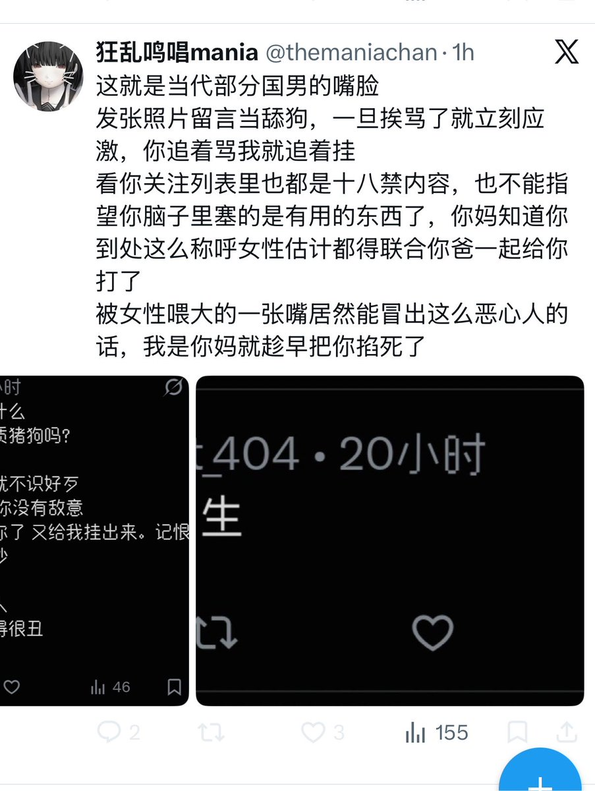

狂乱鸣唱mania
@themaniachan
@labrat_404 对你这样的人要是还能留有爱心那才是对社会的不负责任🥰宝子你继续吧，我追着骂过来了别给你骂爽了

rat
@labrat_404
难以想象这种对小孩毫无爱心的贱婊子 动不动就要趁早给孩子掐死的货 跑去当老师会毁了多少人 还妈妈 哪个妈妈能tm毒到这个份上？
最不配当老师 当妈妈的一只天生阴毒的贱婊子 秒b我 只敢挂人不敢对话 白天带着一张婊脸对学生吆五喝六 晚上带着一张婊脸跑网上骗钱骗关心 https://t.co/0bbhypRhkX